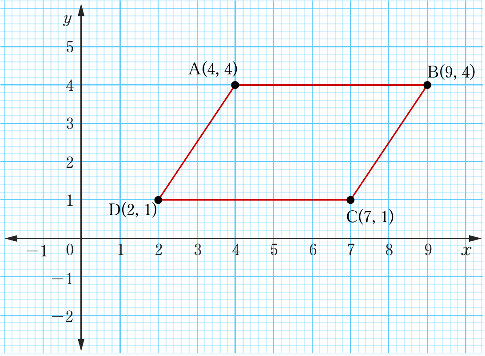
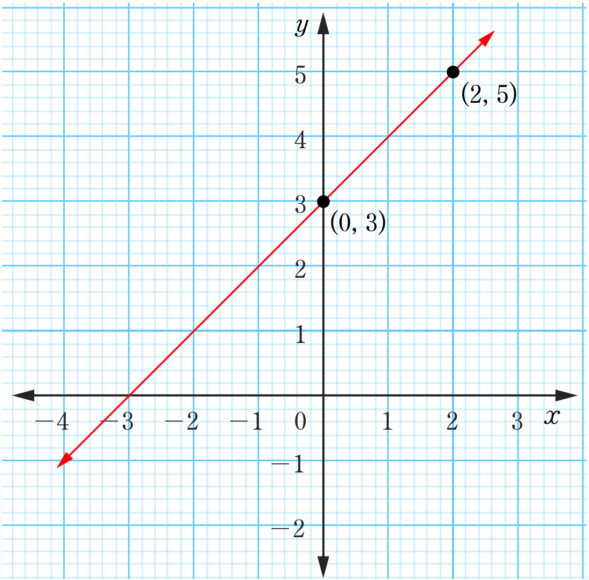

(b)

C (7, 1)
Exercise 6.2
1. (a)

Gradient is positive
A(4, 4)B(9, 4)C(7, 1)D(2, 1)(0, 3)(2, 5)Two coordinate graphs. Top: a quadrilateral on the xy-plane with vertices D(2,1), A(4,4), B(9,4), and C(7,1), connected in order to form a parallelogram-like shape with horizontal top and bottom sides. Bottom, labeled Exercise 6.2, 1(a): a straight line rising from left to right through the points (0,3) and (2,5), with the note “Gradient is positive.”